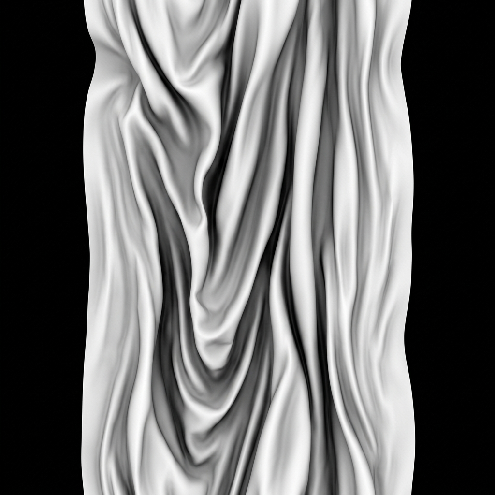
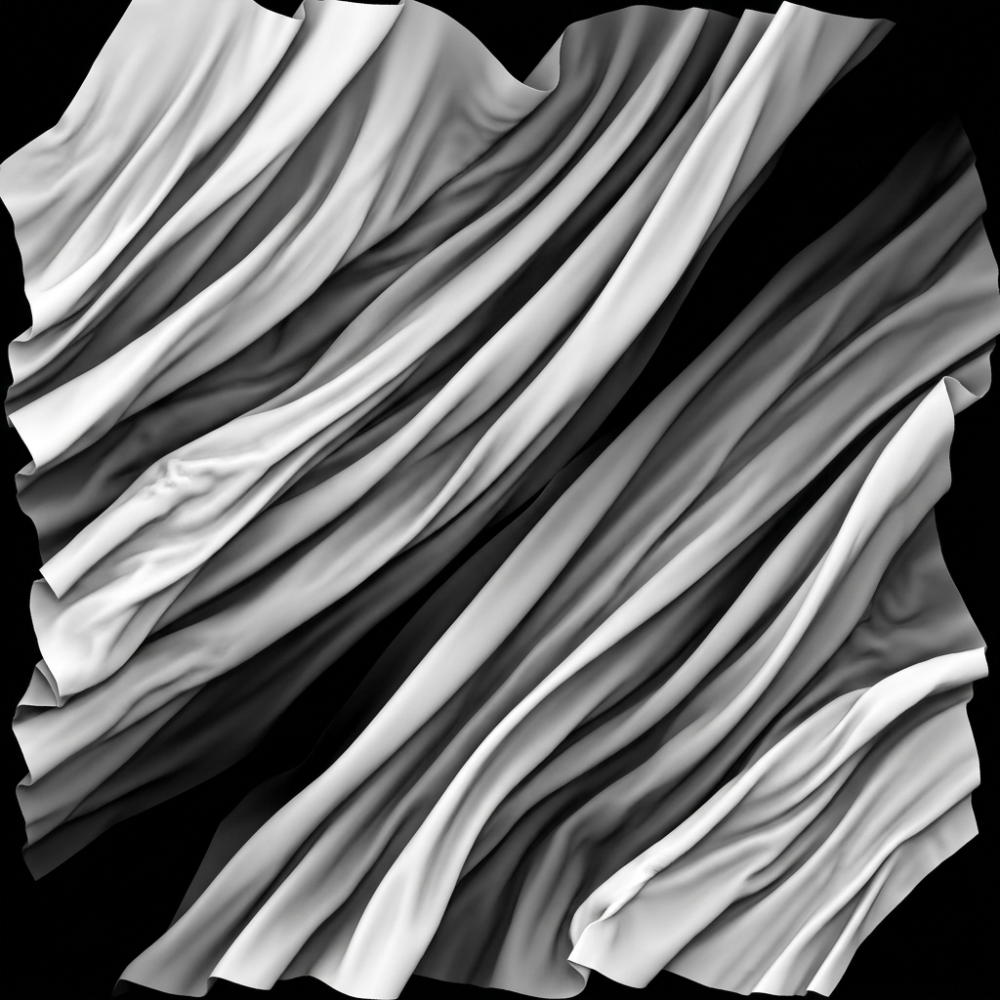

Generate ultra-realistic folds, wrinkles, and seams along splines. Built as a native C++ modifier, FoldFlow delivers real-time viewport speed and production-ready rendering.
Visual examples of procedural deformations generated directly inside the 3ds Max viewport using FoldFlow.

Generate clean, soft drapery folds using custom height alphas. Replaces hours of manual ZBrush sculpting with a single parametric spline sweep.
Procedural stitching patterns and realistic cloth compression at zipper junctions. Adapts perfectly to the underlying geometry curvature.

Procedural tension fold profiles. Controls for falloffs, width, and frequency allow you to construct tension wrinkles of any fabric type.
Add dual-channel compressions along paths. Perfect for jackets, pockets, bags, and complex apparel modeling workflows.
Designed for professional VFX, games, and architectural visualization pipelines.
Unlike heavy dynamics solvers, FoldFlow works procedurally inside the modifier stack. Animate global multipliers and scrub the timeline smoothly with immediate viewport feedback.
Generates clean, uniform quad topology. Folds conform to the existing mesh and stitch seamlessly without breaking vertex IDs, ideal for subdivisions.
Engineered to handle rendering stability. Tested with Corona Renderer, V-Ray, and Arnold — zero flickering or mesh jumping during sequence rendering.
One-time payment. Commercial license for freelancers and studios.
Common questions about FoldFlow licenses and installation.
No. You can buy the license as an individual artist. Payment methods support personal cards and digital assets.
Payments are handled by Digiseller. Immediately after a successful checkout, a unique serial key and your download links are sent to your email.
FoldFlow is compatible with all major render engines for 3ds Max, including Corona Renderer, V-Ray, and Arnold. There is no flicker or frame jump.
Just copy the compiled `Lab.dlm` and `en-US` resource directory to your 3ds Max plugins path (typically `C:\Program Files\Autodesk\3ds Max 2024\Plugins\`) and restart 3ds Max.